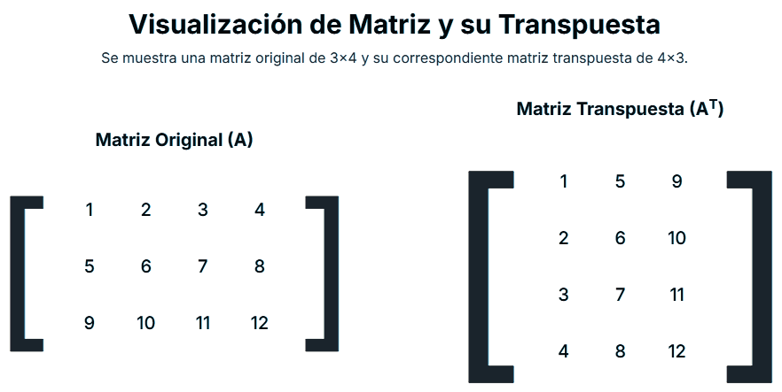
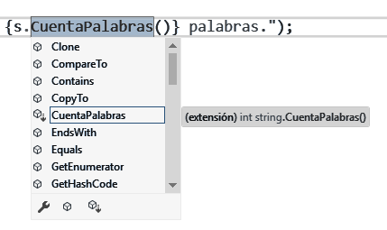

Descargar estos apunte en pdf o html
En ocasiones se nos darán clases o métodos cuya funcionalidad y lógica es idéntica cambiando únicamente uno o más tipos usados. En estos casos se nos generará código prácticamente repetido, donde cambian únicamente algunos tipos usados. Está situación es poco deseable y necesitaremos de algún mecanismo para poder generalizar el código, de forma que podamos reutilizarlo con diferentes tipos sin necesidad de repetirlo.
Muchos lenguajes orientados a objetos, incluido C#, nos permiten definir los tipos dentro de una clase de forma parametrizada al instanciar un objeto de la misma. Expresaremos pues, el tipo o los tipos genéricos a través de una o más letras mayúsculas usadas a lo largo de la definición de la clase. Aunque se suele usar la letra T, podremos usar cualquier otra que nos represente el tipo parametrizado. A estas letras se les denomina parámetros tipo y podremos usarlas en clases, métodos y más estructuras que veremos más adelante.
A través de este tipo de definiciones, se aparecerá un nuevo tipo de polimorfismo en la POO, denominado polimorfismo paramétrico y lo definiremos como aquel que nos permite definir el tipo dentro de una clase de forma parametrizada, al instanciar un objeto de la misma. De tal manera que, para objetos diferentes, el tipo con el que se instancia podrá cambiar.
La forma de representar el tipo parametrizado en los diagramas de clases UML, es a través de un recuadro en la parte superior derecha de la definición.
Veamos como se define en C# para acabar de dar forma al concepto.
Definición: Definiremos los tipos genéricos justo después del identificador de la clase, entre < >.
public class A<T> // Un parámetro genérico
{
public T Dato { get; private set; }
public A(T dato)
{
Dato = dato;
}
}
Uso: Cuando yo instáncie un objeto de la clase genérica A …
A<int> objA = new(4);
En tiempo de ejecución C# construirá una objeto de la clase A como sustituyendo el tipo parametrizado por el que le estamos indicando en el momento de la instanciación. En nuestra instancia será un int como se ve en el código de ejemplo.
public class A
{
public int Dato { get; private set; }
public A(int dato)
{
Dato = dato;
}
}
Si vamos a usar más de un tipo a parametrizar. Los separaremos por comas.
public class A<K, V> // Dos parámetros genéricos
{
private K clave;
private V valor;
public V GetValor(K clave) { ; }
}
class A<T>
{
public T Dato { get; private set; } = null; // Es correcto ¿?
}
En principio no sabemos si el tipo que le vamos a indicar a la clase es valor o referencia. Por lo que deberíamos usar la expresión default(T)
class A<T>
{
public T Dato { get; private set; } = default(T);
}
No podremos usar los parámetros tipo (T, U, K, etc..) como nombre o identificadores de clases, propiedades o campos.
Deberemos llevar cuidado con el polimorfismo funcional. Por ejemplo supongamos la siguiente definición...
class A<T>
{
public void IdMetodo(int p1, string p2) { ; }
public void IdMetodo(T p1, string p2) { ; }
}
Si instanciamos A de la siguiente forma ...
A<string> obj = new();
sería correcto y tendríamos dos signaturas. Una con p1 como int y otra con p1 como string. Pero ... ¿Qué pasa si declaramos?
A<int> obj = new();
En este caso tendremos dos signaturas iguales y aunque no se produzca error, cuando llamemos a IdMetodo se ejecutará la no genérica.
A un objeto declarado a partir de un parámetro tipo:
object y no podremos usar operadores.object.Vamos a definir una clase Matriz que haga de envoltorio o 'Wrapper' sobre tabla dentada de cualquier tipo. Esta clase nos permitirá definir operaciones de utilidad para este tipo de matrices. Por ejemplo, obtener su traspuesta como se ve en la imagen.
Un diagrama que represente la clase descrita tendría una propiedad privada de solo lectura que contendrá la tabla dentada donde guardaremos la matriz original. Fíjate que además, la clase es genérica y por tanto, el tipo de la tabla dentada también lo es T[][].
Para seguir ejemplo, puedes descargar el código desde el siguiente enlace: matriz_generica.cs.

Parametrizamos la clase Matriz con un solo parámetro de tipo genérico T que será el tipo de los datos que contendrá la matriz. Fíjate que el constructor recibe una tabla dentada para y se asegura de que las dimensiones sean compatibles con una matriz.
public class Matriz<T>
{
private T[][] Datos { get; }
public Matriz(T[][] datos)
{
if (datos.Length <= 0)
throw new ArgumentException("Debes proporcionar al menos una fila de datos");
if (datos[0] == null || datos[0].Length <= 0)
throw new ArgumentException("Debes proporcionar al menos una columna de datos");
for (int i = 1; i < datos.Length; i++)
{
if (datos[i] == null)
throw new ArgumentException("Ninguna fila puede ser null");
if (datos[i].Length != datos[0].Length)
throw new ArgumentException("Todas las filas deben tener las mismas columnas");
}
Datos = datos;
}
}
Definimos la propiedad Traspuesta que nos devolverá una nueva matriz con la traspuesta de la original. Fíjate que el tipo de la traspuesta es también Matriz<T>.
public class Matriz<T>
{
//... código omitido por abreviar
public Matriz<T> Traspuesta
{
get
{
int filas = Datos.Length;
int columnas = Datos[0].Length;
T[][] transpuesta = new T[columnas][];
for (int i = 0; i < columnas; i++)
{
transpuesta[i] = new T[filas];
for (int j = 0; j < filas; j++)
{
transpuesta[i][j] = Datos[j][i];
}
}
return new Matriz<T>(transpuesta);
}
}
}
Por último, invalidamos el método ToString para que nos muestre la matriz de forma adecuada.
public class Matriz<T>
{
//... código omitido por abreviar
public override string ToString()
{
string resultado = string.Empty;
foreach (var fila in Datos)
{
resultado += string.Join(", ", fila) + "\n";
}
return resultado.TrimEnd('\n');
}
}
public static void Main()
{
Matriz<int> m1 = new(
[
[1, 2, 3, 4],
[5, 6, 7, 8],
[9, 10, 11, 12]
]);
Console.WriteLine("Matriz enteros original:");
Console.WriteLine(m1);
Matriz<int> m1t = m1.Traspuesta;
Console.WriteLine("Matriz enteros traspuesta:");
Console.WriteLine(m1t);
Console.WriteLine();
Matriz<char> m2 = new(
[
['a', 'b', 'c'],
['d', 'e', 'f'],
['g', 'h', 'i'],
['j', 'k', 'l']
]);
Console.WriteLine("Matriz caracteres original:");
Console.WriteLine(m2);
Matriz<char> m2t = m2.Traspuesta;
Console.WriteLine("Matriz caracteres traspuesta:");
Console.WriteLine(m2t);
}
Si ejecutamos el siguiente código de ejemplo, donde se crea una matriz de enteros y otra de caracteres, y se obtiene su traspuesta...
Mostrará por la consola:
Matriz enteros original: 1, 2, 3, 4 5, 6, 7, 8 9, 10, 11, 12 Matriz enteros traspuesta: 1, 5, 9 2, 6, 10 3, 7, 11 4, 8, 12 Matriz caracteres original: a, b, c d, e, f g, h, i j, k, l Matriz caracteres traspuesta: a, d, g, j b, e, h, k c, f, i, l
Ejemplo doble parametrización:
En el siguiente ejemplo, vamos a definir un patrón 'Union-Type' similar al del tema de abstracción, a través de una clase denominada Resultado<T, E> que nos permita representar el resultado de una operación que puede ser exitosa o fallida. En caso de éxito, contendrá un valor del tipo T y en caso de fallo, un error del tipo E.
Básicamente, definiremos dos clases anidadas dentro de Resultado<T, E> denominadas Exito y Fallo que contendrán el estado de éxito o fallo respectivamente usando los tipos genéricos T y E.
public abstract record class Resultado<T, E>
{
public record Exito(T Value) : Resultado<T, E>
{
public override string ToString() => $"{Value}";
}
public record Fallo(E Error) : Resultado<T, E>
{
public override string ToString() => $"Fallo: {Error}";
}
}
Definimos una clase de utilidad denominada Calculadora que demomento definirá dos tipos de división.
Resultado<int, string> el resultado será otro entero en caso de éxito o un texto de error en caso de fallo.Resultado<double, Exception> el resultado será otro double en caso de éxito o una excepción en caso de fallo.public static class Calculadora
{
public static Resultado<int, string> Divide(int dividendo, int divisor) =>
divisor == 0
? new Resultado<int, string>.Fallo("No se puede dividir por cero.")
: new Resultado<int, string>.Exito(dividendo / divisor);
// Fíjate que en caso de fallo devolvemos una instáncia de DivideByZeroException
public static Resultado<double, Exception> Divide(double dividendo, double divisor) =>
divisor < 1e-5
? new Resultado<double, Exception>.Fallo(new DivideByZeroException())
: new Resultado<double, Exception>.Exito(double.Round(dividendo / divisor, 2));
}
Definimos un sencillo programa principal de test que gestionará los dos tipos de resultados...
class Program
{
static void Main()
{
Resultado<int, string> resultado1 = Calculadora.Divide(10, 0);
Console.WriteLine(resultado1);
Resultado<int, string> resultado2 = Calculadora.Divide(10, 3);
Console.WriteLine(resultado2);
Console.WriteLine();
Resultado<double, Exception> resultado3 = Calculadora.Divide(10d, 0d);
Console.WriteLine(resultado3);
Resultado<double, Exception> resultado4 = Calculadora.Divide(10d, 3d);
Console.WriteLine(resultado4);
}
}
Mostrará por la consola:
Fallo: No se puede dividir por cero. 3 Fallo: System.DivideByZeroException: Attempted to divide by zero. 3,33
C# permite definir no sólo clases genéricas, sino que también puede hacerse genéricos métodos individuales, tanto de instancia como estáticos, sin necesidad de que lo sea la clase o estructura en la que el método está definido.
La sintaxis para parametrizar un método será análoga a la que hemos usado para las clases.
En la mayoría de los casos, este tipo de parametrización de métodos, tendrá más sentido con métodos de utilidad estáticos. Ya que como operaciones sobre un objeto no será 'inmediato' relacionarlos con los tipos de los campos que definen el estado de la clase.
// La clase puede o no estar parametrizada.
public static class A
{
public static void Metodo<T>(T parametro)
{
// Podremos usar el tipo genérico T tanto en
// los parámetros formales, como en el cuerpo
// del método.
}
public static void Metodo(int parametro)
{
// Para C# aunque este método tenga el mismo id
// que el anterior, tendrán signaturas diferentes
// y por tanto sabrá distinguirlos como diferentes.
}
}
Por ejemplo, vamos a definir un método genérico denominado CreaArrayInicializado<T> que nos permita crear un array de cualquier tipo T e inicializarlo con un valor por defecto.
public static T[] CreaArrayInicializado<T>(int tamaño, T valorInicial)
{
T[] array = new T[tamaño];
for (int i = 0; i < tamaño; i++)
{
array[i] = valorInicial;
}
return array;
}
Fíjate que no hace falta indicar el tipo T al llamar al método, ya que el compilador es capaz de inferirlo a partir del tipo del parámetro valorInicial. De todas formas, si lo deseamos, podríamos indicarlo explícitamente como en el último ejemplo del array de booleanos.
public static void Main(string[] args)
{
int[] integerArray = CreaArrayInicializado(5, 0);
Console.WriteLine($"Array de enteros: [{string.Join(", ", integerArray)}]");
string[] stringArray = CreaArrayInicializado(3, "vacio");
Console.WriteLine($"Array de cadenas: [{string.Join(", ", stringArray)}]");
bool[] boolArray = CreaArrayInicializado<bool>(4, false);
Console.WriteLine($"Array de booleanos: [{string.Join(", ", boolArray)}]");
}
Supongamos que tenemos la clase Hora que implementa el interfaz IComparable que vimos anteriormente en el tema. Recordemos que esto supondría que podremos pasar cualquier objeto, pues todos heredan de object. Por esta razón, deberemos hacer un downcast del objeto al comparar a Hora pero no se puede asegurar que el objeto que estamos comparando es una hora, por tanto deberemos añadir algún tipo de código de control de errores...
class Hora : IComparable
{
public int H { get; }
public int M { get; }
public Hora(int h, int m)
{
H = h;
M = m;
}
public override string ToString() => $"{H:D2}:{M:D2}";
public int CompareTo(object? objHora)
{
// Nadie nos asegura que el downcast se pueda realizar.
Hora hora = objHora as Hora
?? throw new ArgumentException("El objeto a comparar no es una hora.", "obj");
int comparacion = H - hora.H;
if (comparacion == 0)
comparacion = M - hora.M;
return comparacion;
}
}
Sin embargo, C# añadió una definición parametrizada para dicho interfaz IComparable<T> y si la utilizamos, nos avisará en tiempo de compilación de que no estamos pasando el tipo correcto y además, no necesitaremos hacer el repetitivo código de control anterior.
Nota
A lo largo de los temas usaremos otras implementaciones de interfaces genéricas como IComparer<T>, IEnumerable<T> o IEquatable<T> definidos en las BCL aunque existen muchas más.
class Hora : IComparable<Hora>
{
// ... código omitido para abreviar.
// Ahora tenemos seguridad de que nos llega una hora.
public int CompareTo(Hora? hora)
{
// Si no quisiéramos permitir null
// ArgumentNullException.ThrowIfNull(hora);
int comparacion = (hora == null) ? 1 : H - hora.H;
if (comparacion == 0 && hora != null)
comparacion = M - hora!.M;
return comparacion;
}
}
Como hemos comentado, dispondremos de métodos estáticos de utilidad que estarán parametrizados, definiendo los tipos de entrada en el momento de su utilización.
Por ejemplo, si queremos ordenar una lista o un array de horas, podremos usar el método estático Array.Sort<T> o el método de instancia List<T>.Sort(). Ambos ordenarán los elementos de la colección usando el método CompareTo definido en la clase.
Si leemos la documentación oficial de la clase List<T> veremos que el método Sort() generará una excepción InvalidOperationException en tiempo de ejecución si el tipo T no implementa el interfaz IComparable<T> puesto que no sabrá como ordenar Horas.
Puesto que nuestra clase Hora implementa dicho interfaz, podremos usar ambos métodos para ordenar una lista o un array de horas. Puedes descargar el código desde el siguiente enlace: hora_comparable.cs.
static void Main()
{
List<Hora> horas =
[
new(9, 55), new(10, 50), new(8, 30), new(7, 15)
];
Hora[] aHoras = [.. horas];
horas.Sort();
Console.WriteLine(string.Join(", ", horas));
Array.Sort<Hora>(aHoras);
Console.WriteLine(string.Join<Hora>(", ", aHoras));
}
Fíjate que el método String.Join<T> es parametrizado. Lo que sucede es que en el caso de la listas String.Join<T>, es capaz de inferir el tipo T a partir del tipo de la colección que le pasamos como segundo parámetro. Además, en el caso de ordenación de un array debemos usar el método de clase parametrizado Array.Sort<Hora> para que espere como entrada un Hora[]. No hace falta que indiquemos el tipo en el caso de la lista, pues es un método de instancia y el tipo ya lo conoce.
Podremos definir restricciones de tipo asociadas a su definición para los parámetros tipo. Se especifican con la palabra reservada where al final de la definición.
<T> where T : restricción
Por ejemplo, si queremos que el tipo genérico T sólo pueda ser un tipo valor, lo indicaremos de la siguiente manera...
class A<T> where T : struct
Tendremos diferentes tipos de restricciones entre las que podemos destacar las siguientes ...
| Tipo Restricción | Descripción |
|---|---|
| De herencia | El tipo debe heredar de una clase base determinada.<T> where T : ClaseBaseDeT |
| De interfaz ⭐ | El tipo debe implementar una interfaz determinada.<T> where T : IinterfazAImplementar |
| De tipo referencia | El tipo debe ser referencia.<T> where T : class |
| De tipo valor | El tipo debe ser valor.<T> where T : struct |
| De constructor | El tipo debe tener un constructor sin parámetros.<T> where T : new |
Vamos a recuperar la clase class Matriz<T> y a usarla junto a la clase Hora : IComparable<Hora>. Para ello, vamos a invalidar los métodos de la clase object int GetHashCode() y bool Equals(object obj) que me devolverá true si todos los elementos de la matriz contenida son iguales a los de la que me llegan para comparar. Devolviendo false en caso contrario.
Pero... ¿Cómo comparo los elementos de de la matriz si son de tipo T?
Lo que haremos es añadir la restricción de que los T con se instáncie Matriz<T> implementen el interfaz IComparable<T> de la siguiente manera:
public class Matriz<T> where T : IComparable<T>
{
private T[][] Datos { get; }
// ... código omitido por abreviar.
public override int GetHashCode() => HashCode.Combine(Datos);
public override bool Equals(object? obj)
{
bool sonIguales = true;
if (obj is not Matriz<T> otraMatriz)
{
sonIguales = false;
}
else if (Datos.Length != otraMatriz.Datos.Length || Datos[0].Length != otraMatriz.Datos[0].Length)
{
sonIguales = false;
}
else
{
int filas = Datos.Length;
int columnas = Datos[0].Length;
for (int i = 0; i < filas && sonIguales; i++)
for (int j = 0; j < columnas && sonIguales; j++)
sonIguales = Datos[i][j].CompareTo(otraMatriz.Datos[i][j]) == 0;
}
return sonIguales;
}
}
Ahora, además de poder crear matrices de int o string que implementan IComparable<...>, podré crear matrices de objetos Hora ya que dicha clase también implementa dicho interfaz. Sin embargo, al crearla de cualquier otro tipo que no lo implemente, obtendremos un error.
Por último, vamos a crear un simple programa principal que cree dos matrices de horas iguales y me confirme su igualdad.
Cuando ejecutemos el programa, mostrará por la consola True. Puesto que, además de tener las mismas dimensiones, todos los elementos son iguales porque hemos usado el método CompareTo de la clase Hora para compararlos.
static void Main()
{
Matriz<Hora> m1 = new(
[
[ new (0, 0), new (0, 30) ], [ new (12, 0), new (12, 30) ], [ new (18, 0), new (18, 30) ]
]);
Matriz<Hora> m2 = new(
[
[ new (0, 0), new (0, 30) ], [ new (12, 0), new (12, 30) ], [ new (18, 0), new (18, 30) ]
]);
Console.WriteLine(m1.Equals(m2));
}
Puedes descargar el código desde el siguiente enlace: matriz_generica_comparable.cs.
En ocasiones estas restricciones pueden ser confusas de leer si la clase implementa a su vez varias interfaces y el tipo genérico tiene varias restricciones de interfaz. Por ejemplo, ¿Qué significará esta definición? ...
public class Matriz<T> : IComparable<Matriz<T>>, ICloneable where T : IComparable<T>, ICloneable { ... } // 😕
Pues que la clase Matriz<T> implementa los interfaces IComparable<Matriz<T>> e ICloneable y que el tipo genérico T debe implementar los interfaces IComparable<T> e ICloneable.
Funcionalidad interesantísima de C# para extender la funcionalidad en clases selladas o de las que no disponemos el código porque es una librería de terceros, incluso para evitar dependencias y acoplamientos en arquitecturas de capas. De hecho, otros lenguajes modernos como Kotlin o Swift también los permiten.
Pero dejando a un lado consideraciones complejas y de diseño, en este tema vamos definir simplemente el concepto y su sintaxis en C#. Siendo importante destacar que, desde la documentación oficial del lenguaje, se recomienda no abusar del uso de este tipos de métodos, y por tanto usarlos en los casos anteriormente descritos.
Características básicas de los métodos de extensión:
Una propuesta de plantilla básica de sintaxis de definición de estos métodos podría definir los en un fichero fuente independiente de la siguiente manera:
namespace <Tipo>Extensions;
public static class <Tipo>Extension
{
public static void IdMetodoExtensor(this <Tipo> o)
{
// Operaciones sobre o.
}
}
Veámoslo a través de un ejemplo sencillo pero bastante 'esclarecedor'...
Supongamos que queremos añadir métodos de utilidad sobre objetos cadena string que nos proporcionan las BCL. Sin embargo, nosotros no podemos modificar la implementación en la clase string para añadir nuevas operaciones.
Crearemos un fuente llamado StringExtension.cs que contendrá la clase estática StringExtension donde añadiremos todos los métodos de extensión sobre string.
En el siguiente ejemplo hemos añadido el método Capitaliza que pasa a mayúsculas la primera letra de cada palabra y el método CuentaPalabras que me retorna el número de palabras en una cadena.
namespace StringExtensions;
public static class StringExtension
{
public static string Capitaliza(this string s)
{
string sCapitalizada;
if (!string.IsNullOrEmpty(s))
{
StringBuilder sb = new (s);
sb[0] = char.ToUpper(sb[0]);
for (int i = 1; i < s.Length; i++)
sb[i] = char.IsWhiteSpace(sb[i - 1])
? char.ToUpper(sb[i]) : sb[i];
sCapitalizada = sb.ToString();
}
else
sCapitalizada = s;
return sCapitalizada;
}
public static int CuentaPalabras(this string s)
=> s.Split(
[ ' ', '.', '?' ],
StringSplitOptions.RemoveEmptyEntries
).Length;
}
Aparentemente son métodos de utilidad son estáticos y que reciben como parámetro un objeto de la clase sobre la que queremos añadir la funcionalidad. Pero fíjate que, el tipo a extender string, tiene la palabra reservada this delante. Esto es lo que indica a C# que se trata de un método de extensión.
Ahora si quisiéramos utilizar estos métodos adicionales en un programa simplemente tendríamos que hacer un using StringExtensions; para que nos los ofrezca el 'IntelliSense' al ver las la operaciones posibles sobre un objeto cadena.
using StringExtensions;
class Ejemplo
{
static void Main()
{
string s = "hola caracola";
// Si no hacemos el using StringExtensions; los métodos Capitaliza
// y CuentaPalabras no nos los ofrecerá.
Console.WriteLine($"{s.Capitaliza()} tiene { s.CuentaPalabras()} palabras.");
}
}
Puedes descargar el código desde el siguiente enlace: extensores_cadena.cs
Tip
Dependiendo del IDE que estemos usando, el Intellisense normalmente nos ofrece un símbolo (ej. 🔹) al lado del método publico de la clase y si este es un método de extensión lo indicará con una flecha hacia abajo (ej. 🔹↓) y/o la etiqueta (Extensión) precediendo a la descripción del método.

Ejemplo:
Supongamos que tenemos dos clases Jugador y Alumno que representan respectivamente a un jugador de fútbol y a un alumno de una escuela. Ambas clases tienen propiedades similares pero no iguales y además están definidas en librerías de terceros y no podemos modificarlas. Piensa que, incluso aunque pudiéramos modificarlas y añadir nuevos métodos, nos obligaría a añadir dependencias a dichas librerías y por tanto a aumentar el acoplamiento entre capas.
public record class Jugador(string Nombre, string Apellido, DateOnly Nacimiento);
public record class Alumno(string Nombre, DateTime Nacimiento);
Quiero añadir métodos de utilidad para convertir un Jugador en un Alumno y viceversa. Fíjate que no son del todo equivalentes, ya que el Alumno tiene una sola propiedad Nombre mientras que el Jugador la tiene dividida en Nombre y Apellido. Además, la propiedad Nacimiento es de diferente tipo en ambas clases. Por lo que cada vez que queramos hacer una conversión deberemos escribir el mismo código repetidamente.
La solución es definir dos métodos de extensión siguiendo el esquema que hemos visto anteriormente. Estos métodos los podríamos definir en un mismo fichero fuente llamado ConversionExtensions.cs con un namespace ConversionExtensions.
namespace ConversionExtensions;
public static class AlumnoExtension
{
public static Jugador ToJugador(this Alumno alumno) => new(
Nombre: alumno.Nombre.Split(' ')[0],
Apellido: alumno.Nombre.Split(' ')[^1],
Nacimiento: DateOnly.FromDateTime(alumno.Nacimiento));
}
public static class JugadorExtension
{
public static Alumno ToAlumno(this Jugador jugador) => new(
Nombre: $"{jugador.Nombre} {jugador.Apellido}",
Nacimiento: jugador.Nacimiento.ToDateTime(new TimeOnly(0, 0)));
}
Ahora ya solo nos quedaría usar estos métodos donde los necesitemos. Para ello, deberemos hacer un using ConversionExtensions; en el fichero fuente donde los vayamos a usar.
using ConversionExtensions; class Ejemplo { static void Main() { Jugador jugador1 = new( Nombre: "Lionel", Apellido: "Messi", Nacimiento: new DateOnly(1987, 6, 24)); Alumno alumno1 = jugador1.ToAlumno(); Console.WriteLine(jugador1); Console.WriteLine(alumno1); Console.WriteLine(); Alumno alumno2 = new( Nombre: "Cristiano Ronaldo", Nacimiento: new DateTime(1985, 2, 5)); Jugador jugador2 = alumno2.ToJugador(); Console.WriteLine(alumno2); Console.WriteLine(jugador2); } }
Puedes descargar el código desde el siguiente enlace: extensores_conversion.cs
Mostrará por la consola:
Jugador { Nombre = Lionel, Apellido = Messi, Nacimiento = 24/06/1987 }
Alumno { Nombre = Lionel Messi, Nacimiento = 24/06/1987 0:00:00 }
Alumno { Nombre = Cristiano Ronaldo, Nacimiento = 05/02/1985 0:00:00 }
Jugador { Nombre = Cristiano, Apellido = Ronaldo, Nacimiento = 05/02/1985 }
Resumen
Para el usuario de estas clases, los métodos ToAlumno() y ToJugador() parecerán métodos de instancia de las clases originales. Sin embargo, no lo son y no han modificado el código original de dichas clases. Además, solo aparecerán si hacemos el using ConversionExtensions;.